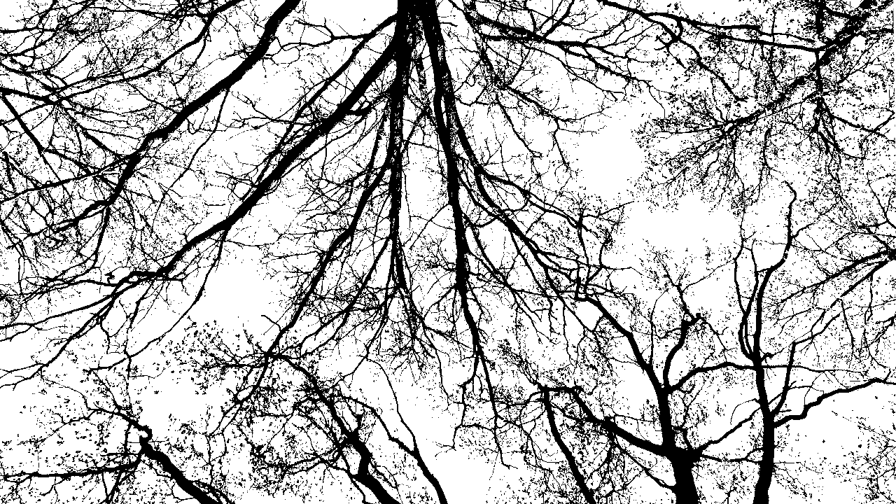

Tree
Пространство проектов, обучения, рефлексии и резонансов (вдохновения). Развивается с 2025 года, вдохновлённый XXIIVV.
Его цель – углубиться в интересующие процессы, поближе понять их и, возможно, использовать в жизни. Круг интересов находится в симбиозе с природой, техникой и искусством.
Структура пространства символизирует дерево:
- крона
- аудиовизуальные проекты.
- ветви
- независимые артефакты.
- ствол
- мастерская программ.
- библиотека (не)знаний.
- корни
- работы других авторов, вызывающие резонанс внутри.
- ключевые понятия.
Поток идёт снизу вверх и рождает новые сущности – от резонансов до аудиовизуальных проектов.
